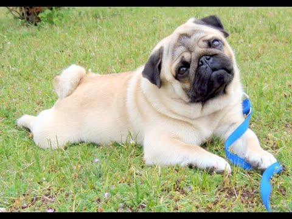
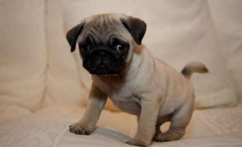

Mopsz
Történet
Kínai eredet:
A tudósok a mai napig sincsenek tisztában azzal, hogy mikor alakultak ki olyan rövidszőrű, kunkorodó farkú és rövid orrú kutyák, mint a mopsz. De abban egyeznek az álláspontok, hogy már időszámításunk előtt tenyésztettek a kínaiak kisméretű; rövid, széles és laposfejű kutyákat. Ezeket palotában tartották és általában eunuchok tenyésztették őket. A rövid orrú kutyákat már jóval a kereszténység előtt ismerték Kínában. Sőt, az uralkodók kedvelt társai voltak, előfordult olyan is, hogy 4000 eunuch tevékenykedett egy tökéletes egyed létrehozásán. Ezen kínai kutyákat, csak a korabeli ábrázolások alapján ismerhetjük, amelyek viszont rendkívül stilizáltak. Mégis 3 alaptípust tudunk megkülönböztetni: az oroszlánkutyát, a pekingit és a lo-szét, amely a modern mopsz legvalószínűbb őse.
Európai történet
Európai eredet:
Az európaiak már az oroszok előtt ismerték a lo-szét. A XVI–XVII. században érkezhettek rövid orrú, kicsi kutyák Kínából Nyugat-Európába. Valószínűleg a szelektív tenyésztés már ekkor a kissé hosszabb testű lo-sze kutyát zömökebbé változtatta. A korai leírásokból kiderül, hogy a mopsz őse, a holland királyi udvarban is jelen volt. Egy alkalommal még az európai történelmet is megváltoztatta. Erről a történetről Sir Roger Williams számolt be először. Az eset valamikor 1571 és 1573 között történhetett, a spanyol-holland háború idején, amikor a spanyolok rajtaütöttek Hallgatag Vilmos táborán.

Link:
Mopsz2